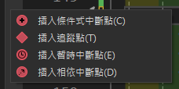
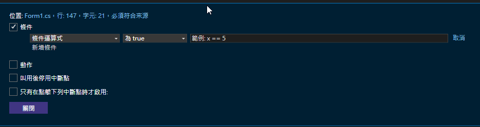
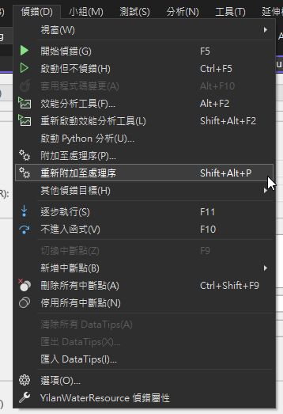

為什麼要學習除錯技巧？
身為工程師，寫程式只是第一步，找出並解決程式中的問題才是真正的挑戰。Visual Studio 提供了完整的除錯工具，善用這些工具不只能快速找出 Bug，更能讓你深入理解程式的執行流程。本文從基礎中斷點到遠端除錯，帶你完整掌握 VS 的除錯技巧。
1. 中斷點（Breakpoint）的使用
中斷點是除錯最核心的功能。程式執行到中斷點時會暫停，讓你檢查當前的變數值、呼叫堆疊與程式狀態。
1 | // 一般中斷點：點擊行號左側的灰色區域即可設定 |
條件中斷點特別有用的場合： 迴圈裡有一萬筆資料，但只有第 9527 筆會出錯。這時設 i == 9527 當條件，比按 F5 按到手抽筋快多了。
除了條件中斷點，VS 還支援：
- 動作中斷點（Tracepoint）：不暫停，只輸出一行訊息到 Output 視窗，適合用來追蹤流程而不影響執行
- 命中計數（Hit Count）：第 N 次才中斷，處理迴圈問題很方便
- 相依中斷點：當另一個中斷點被命中後才啟用


2. 重要的除錯快捷鍵
| 快捷鍵 | 功能 | 使用場景 |
|---|---|---|
| F5 | 開始除錯 | 啟動程式並進入除錯模式 |
| F10 | 逐步執行 (Step Over) | 執行當前行，不進入方法內部 |
| F11 | 逐步進入 (Step Into) | 進入方法內部逐步執行 |
| Shift+F11 | 逐步跳出 (Step Out) | 執行完當前方法並返回 |
| Ctrl+Shift+F5 | 重新啟動 | 重新開始除錯 |
| Ctrl+Alt+P | 附加至處理程序 | 開啟對話框，連接到執行中的程式 |
| Shift+Alt+P | 重新附加至處理程序 | 快速重新連到上次附加的程序 |
Ctrl+Alt+P 和 Shift+Alt+P 容易混淆：前者是開對話框讓你選要附加哪個程序（第一次用），後者是直接重新連上次那個（省略選擇步驟）。遠端除錯第一次連線必須用 Ctrl+Alt+P。
3. 進階除錯技巧
1 | public class DebugDemo |
監看視窗（Watch Window） 是另一個很實用但常被忽略的功能：暫停時把滑鼠移到變數上可以快速看值，但如果要持續追蹤某個運算式（例如 users.Count(u => u.IsActive)），可以把它拖到監看視窗，每次中斷都會自動更新。
4. VS 內建效能分析工具
除了手動 Stopwatch 計時，VS 有內建的 Diagnostic Tools 視窗（除錯中自動開啟，或從「偵錯 > 視窗 > 診斷工具」叫出），可以看到：
- CPU 使用率：時間軸上的 CPU 曲線，高峰區段點下去可看到哪個方法最耗時
- 記憶體用量：追蹤 managed heap 的增長，拍下快照後比較兩個時間點的物件數量，是找記憶體洩漏的起點
需要更深入的效能分析時，用「偵錯 > 效能分析工具」（Alt+F2）開啟完整的 Profiler，選 CPU Usage 後會產生火焰圖，可以直接看到哪條呼叫路徑佔用最多時間。
1 | // 手動計時適合用在快速比較兩個實作的相對速度 |
5. 遠端除錯完整教學
遠端除錯讓你在本機 VS 對遠端主機（測試機、正式機）上執行的程式設中斷點。
5.1 系統架構圖
5.2 遠端主機設定步驟
下載並安裝 Remote Tools
1
2
3前往 https://visualstudio.microsoft.com/downloads/
頁面往下找「Remote tools for Visual Studio 2022」，
選擇對應架構（x64 最常用）下載後安裝。以系統管理員身分執行 msvsmon.exe
1
2
3
4
5安裝後的預設路徑：
C:\Program Files\Microsoft Visual Studio\17.0\Common7\IDE\Remote Debugger\x64\msvsmon.exe
注意：若遠端主機沒有安裝 VS 本體，Remote Tools 是獨立下載包，
解壓後自行選擇目錄，路徑會依安裝位置不同而不同。開放防火牆
1
2
3
4
5
6# VS 2022 預設主連接埠 4026（TCP）
# 64 位元 Remote Debugger 如需同時除錯 32 位元程序，會另起 4025（TCP）
# 3702（UDP）是 WS-Discovery，用於在同網段自動探索 Remote Debugger，
# 若直接用 IP 連線可以不開這個 port
New-NetFirewallRule -DisplayName "VS Remote Debugger" -Direction Inbound -LocalPort 4026 -Protocol TCP -Action Allow
New-NetFirewallRule -DisplayName "VS Remote Debugger 32bit" -Direction Inbound -LocalPort 4025 -Protocol TCP -Action Allow
5.3 開發機連線步驟
開啟 Visual Studio，確認本機原始碼與遠端版本一致（版本不同中斷點會打不中）
偵錯 > 附加至處理程序（或
Ctrl+Alt+P）注意：這裡要用
Ctrl+Alt+P（開對話框），不是Shift+Alt+P（重新附加上次那個）。在「連接類型」選 遠端（無驗證） 或 遠端（Windows 驗證）
在「連接目標」輸入
IP位址:4026或機器名稱:4026，按 Enter點「尋找」等清單出現後，選擇要除錯的處理程序
點「附加」開始除錯

5.4 連線前注意事項
- 開發機與遠端主機的組建版本（Build）必須相同
- 遠端主機需要有對應的 PDB 符號檔
- 建議先在測試環境驗證流程，正式機上的遠端除錯會讓程式效能下降
- 正式機遠端除錯請務必走 VPN 或專用網路，避免 msvsmon 暴露在外網
6. 常見問題（FAQ）
遠端除錯問題
無法連線
- 防火牆是否放行 4026 TCP
- Remote Tools 版本是否與 VS 版本相符（年分一致即可，小版本不用完全一樣）
- 確認 msvsmon 有在遠端主機執行，且顯示「等待連線」狀態
- 若用機器名稱無法連，改用 IP 位址試試
找不到處理程序
- 確認程式正在執行
- 若程式是以 SYSTEM 帳號跑的服務，需要勾選「顯示所有使用者的處理程序」
中斷點命中但顯示「沒有符號」
- 確認 PDB 檔案存在且與 DLL 的 Build ID 相符
- 在「偵錯 > 選項 > 符號」加上 PDB 所在路徑
一般除錯問題
中斷點不會停下來
- 確認執行的是 Debug 組態，不是 Release
- 中斷點圖示空心？表示符號未載入，重新建置後再試
Production 環境出問題無法直接除錯
- 先靠結構化日誌（Serilog、NLog）縮小範圍
- Application Insights 或類似的 APM 工具可在不影響服務的情況下取得例外堆疊
- 確認有需要才考慮遠端除錯，對效能影響不小
非同步程式很難追蹤
- 善用「偵錯 > 視窗 > 工作」視窗看各 Task 狀態
- 例外發生時 VS 會停在
await那行，往上看 Inner Exception 通常更有用
7. 實用除錯建議
養成這幾個習慣，debug 時會快很多：
- 條件中斷點比「F5 無限重試」省力，設好條件直接跳到問題點
Debug.WriteLine輸出到 Output 視窗，不會干擾 UI，比Console.WriteLine更適合除錯用途- 提交前記得清除
Debugger.Break()這類除錯用程式碼，可以在 CI 加個 grep 保底 - 變數命名清楚，監看視窗裡的值才有意義；
temp1、temp2看到會想哭 - Diagnostic Tools 的 CPU/記憶體時間軸，養成除錯時瞄一眼的習慣，有時問題在你還沒意識到前就已經在圖上很明顯
8. 例外處理與日誌的搭配
遠端環境不能隨時附加除錯器，日誌品質決定了排查速度。
1 | public async Task<User> GetUserAsync(int id) |
幾個讓日誌真正有用的原則：
- 用結構化日誌（
{UserId}佔位符而非字串插值），才能在 Seq 或 Kibana 裡過濾 - Warning 留給「出乎意料但程式能繼續跑」的狀況，Error 留給「需要人介入」的狀況
- 每層只 log 一次，別在 repository、service、controller 三層都 log 同一個例外，堆疊裡會出現三份重複